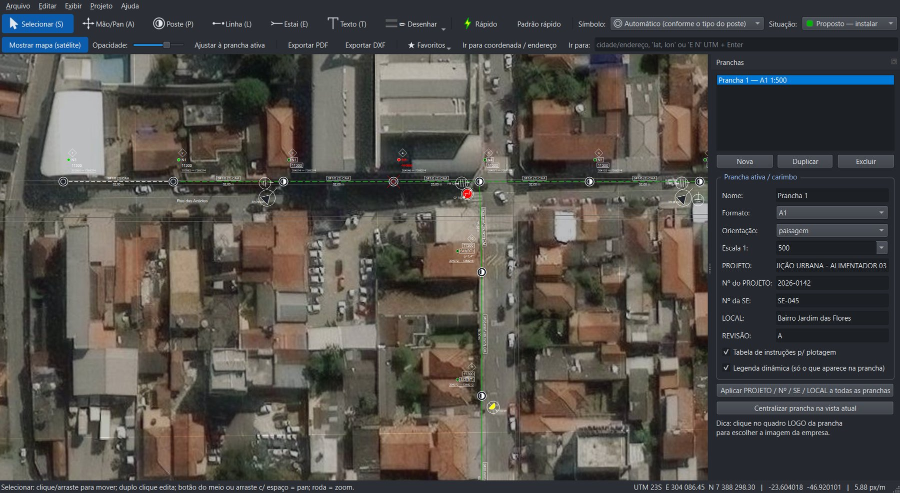
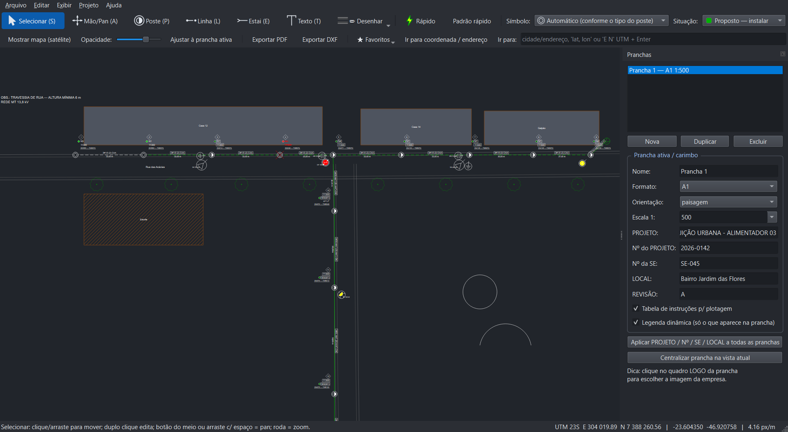
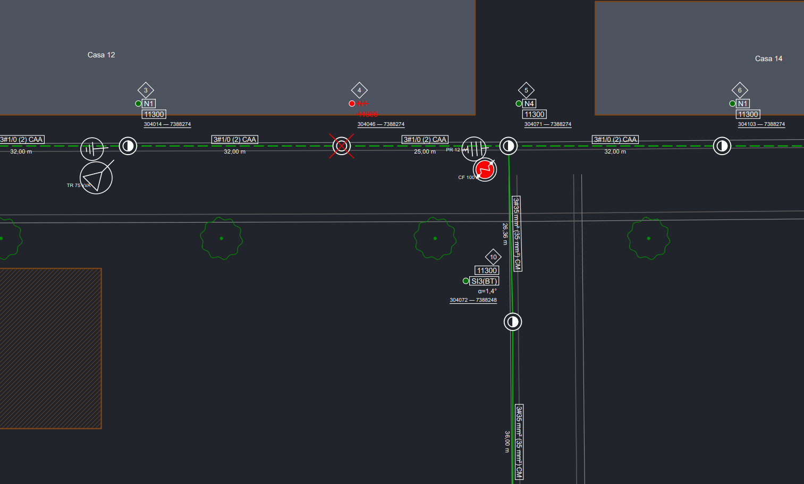
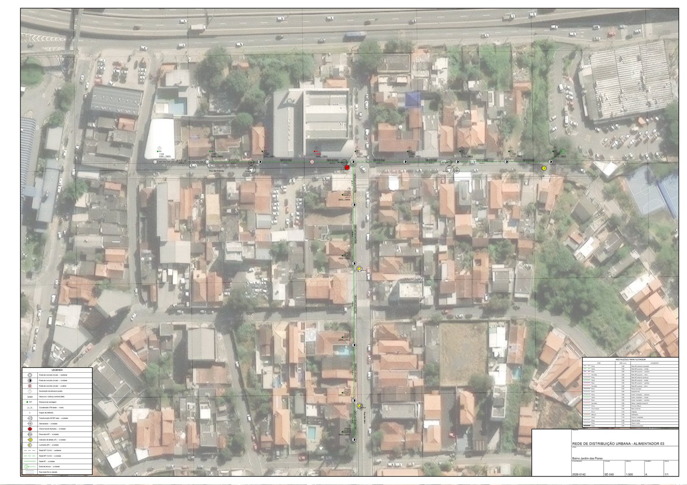
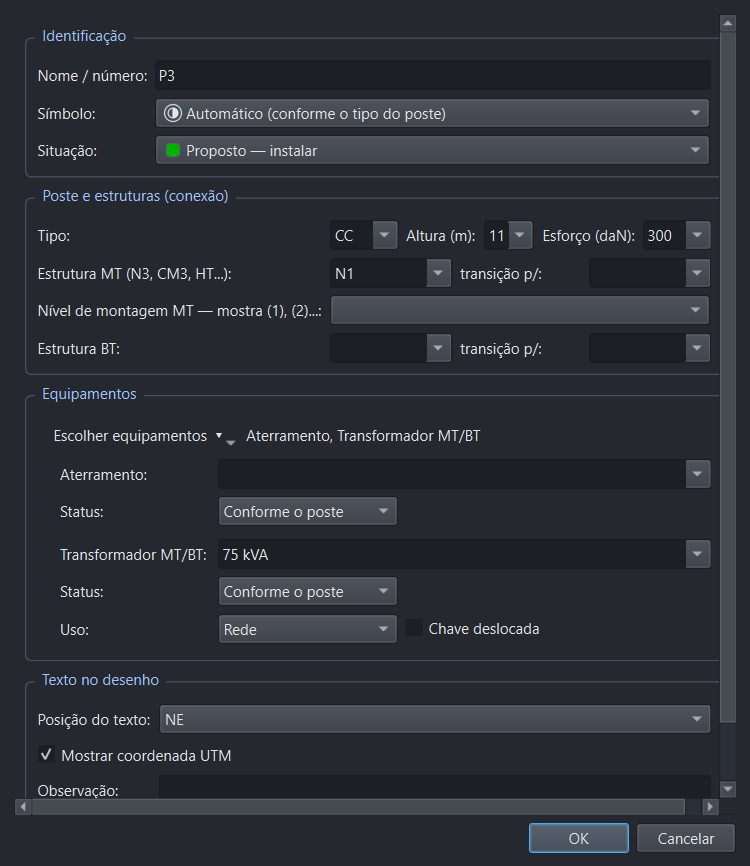
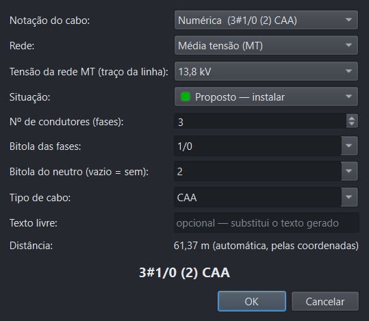
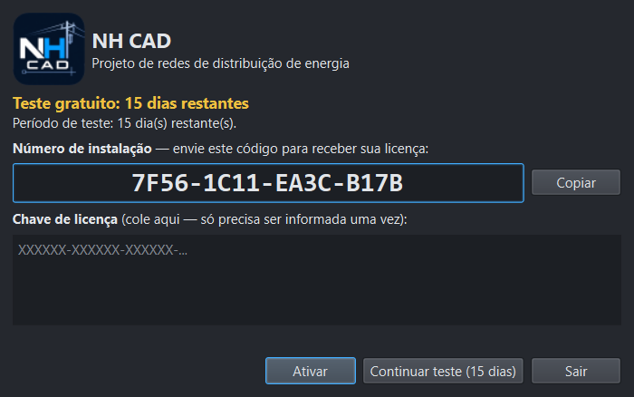

Postes, estruturas, equipamentos, vãos, estais e UTM automático — com prancha pronta para exportar em PDF ou DXF (A1 a A4).
Teste gratuito por 15 dias • Windows 10/11 • Não precisa de Python
Do lançamento dos postes à prancha plotada, sem trocar de programa.
Satélite, ruas e topográfico. Ajuste a opacidade, oculte quando quiser e salve locais favoritos. Busca por endereço, lat/long ou UTM.
Simbologia da norma IT-EO-008 (Cemig/Electric Office): concreto circular, duplo T, madeira, aço, compósito e IP, com cores por status (existente, instalar, substituir, retirar). Estruturas N1–N4, HT/HTT, compactas CM/CE e transições (ex.: N3-N4).
Transformador (rede, dedicado, IP, serviços auxiliares, chave deslocada), chave fusível e faca (aberta/fechada), religador, seccionalizador, para-raios, capacitor, regulador, indicador de defeito, luminária.
Escolha condutores, bitola e cabo: 3#1/0 (2) CAA. Distância automática pelo mapa e ângulo de mudança de direção calculado.
Cada poste recebe sua coordenada UTM. Exporte o quadro de postes em CSV.
Desenhe ruas com calçadas, ferrovia (trilhos), edificações, polilinhas, círculos, arcos, árvores, textos e símbolos de desenho (obstáculo, porteira, casa...).
Carimbo com logo, tabela de plotagem, legenda dinâmica (só o que aparece na prancha), várias pranchas na mesma tela e exportação PDF/DXF em A1 a A4.
Modo Rápido com padrão configurável, textos arrastáveis, atalhos de teclado, desfazer/refazer e tema escuro estilo CAD.
Capturas reais de tela do NH CAD (clique para ampliar).






Imagens de satélite: Esri, Maxar, Earthstar Geographics e comunidade de usuários GIS. As redes mostradas são exemplos ilustrativos.
Baixe, instale e use 15 dias grátis. Para continuar, solicite a licença ideal para você.
| Tipo | Duração | Para quem |
|---|---|---|
| Teste | 15 dias após instalar | Conhecer o programa sem compromisso. |
| Provisória | +15 dias | Estender a avaliação ou um projeto pontual. |
| Professor | 1 ano | Docentes e instituições de ensino. |
| Vitalícia | Sem prazo, enquanto instalado | Uso profissional contínuo no computador instalado. |
A licença é vinculada ao número de instalação do seu computador. A quantidade de dias restantes aparece sempre no título da janela do programa.
Leva menos de 2 minutos.
Instalar_NHCAD.exe (botão abaixo).7F56-1C11-EA3C-B17B). Clique em Continuar teste para usar por 15 dias.Versão 1.0 para Windows 10/11 (64 bits) • teste de 15 dias
⬇ Baixar instalador (.exe)Prefere sem instalar? Baixe a versão portátil (mesmo período de teste).
O instalador ainda não possui assinatura digital paga, por isso o SmartScreen mostra o aviso. Clique em “Mais informações” e “Executar assim mesmo”. Baixe sempre desta página.
O programa deixa de abrir projetos até que uma chave de licença seja informada. Seus arquivos .rdist não são apagados.
Somente para carregar o mapa (os tiles ficam em cache no computador) e para a busca de endereços. A licença funciona offline.
Não. Cada chave é gerada para um número de instalação específico. Em outro computador, solicite outra licença.
A licença vitalícia vale enquanto o programa estiver instalado: ao desinstalar, ela é removida e uma nova instalação gera um novo número e exige nova chave. O período de teste não reinicia ao reinstalar.
Sim: DXF em metros, com coordenadas UTM reais, camadas e espessuras definidas na tabela de plotagem. Também exporta PDF em A1, A2, A3 e A4.